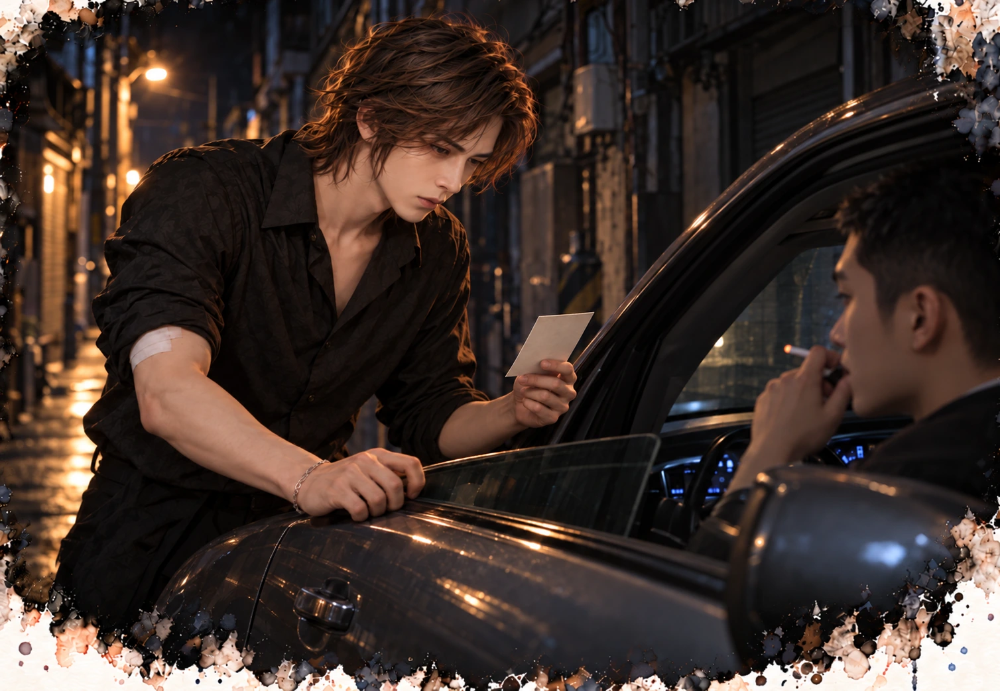

沒有招牌的酒吧 · 第一部
第七章 她也被盯上了
「女生正常大概要十二以上。妳這是很明顯的缺鐵性貧血。」他抬頭看我，「最近會不會頭暈？喘？手腳冰冷？」
「還好。」
「有沒有解黑色的大便？」
「沒有。」
我說得很快。說完，我才想起那天半夜，鏡子旁邊那盞黃黃的小燈。
「有在吃止痛藥嗎？」
我低頭去摳指甲邊的死皮，摳了好一會兒。
「偶爾。」
醫生看著那份報告，又看著我，像在看兩份對不上的文件。
「林小姐，缺鐵的原因很多，但妳這個年紀、這個數字，再加上止痛藥，我們一定要排除腸胃道出血。」他在電腦上點了幾下，「我幫妳排胃鏡，最快下週二。」
「我下週二有戲。」
「那週四。」
「週四也有。」我說，「殺青是三週後。殺青之後我再來。」
他停下手，轉過來，正對著我。
「妳這個數字，」他說，「不一定等得到殺青。」
我看著他。那句「等不到殺青」停在耳朵裡，聽起來像一句警告。
我最不喜歡別人這樣叫我停下來。
我被很多人嚇過。導演、製作人、經紀公司。他們嚇我的時候都說：這個角色妳不要，後面有十個人在排隊。
我從來沒有讓任何一個角色，落到後面那十個人手上。
「殺青之後。」我說。
他沉默了一會兒，開了鐵劑，開了胃藥，在病歷上打了很長一段字。最後他讓我簽了一張單子，上面寫著醫師已告知風險，病人選擇延後檢查。
我簽了。字寫得很漂亮。
下午，服裝間。
這部戲後半段，女主角被打入冷宮，一個人在宮裡等死。導演很重視這一段，他站在試衣鏡旁邊，手插在口袋裡，把我從頭打量到腳，又從腳打量回來。
「還不夠。」他說。
服裝師在旁邊拿著筆記本。
「這一段，」導演說，「我要她細得像一張紙。風一吹就會斷的那種感覺。觀眾一看到她的腰，就要知道她快死了。」
他伸手，在我腰側比了一下。
「這裡，再收。」
服裝師蹲下來，拿著珠針，沿著我的腰線一針一針別進去。每別一針，戲服就貼得更緊一點。她別完，站起來，看著鏡子。
「再收兩公分，穿起來會很好看。」她說，「但棠姐妳要撐得住。」
「撐得住。」
導演點點頭，走了。
我站在鏡子前面。戲服是白的，素的，腰被收成細細的一截，細到不像真的。
鏡子裡的人很漂亮。
也很像快死了。
我一直在想，他要的是像，還是真的。
後來我想通了，對我來說，這兩個是一樣的。
回家的車上，經紀人打電話來。
「驗血的結果怎麼樣？」
「有點貧血。」
「嚴重嗎？會不會影響下週的記者會？」
「嚴重嗎」後面，緊接著就是記者會。
我還沒回答，她已經問到工作了。
我看著窗外，車子在紅燈前面停下來。一台公車開過去，車身上是我上一部戲的廣告，我的臉放得很大，笑著。
「不會影響。」我說，「殺青之前，我不會倒。」
她鬆了一口氣，說那就好，說導演很滿意，說這部戲播出之後，我會再上一個層級。
掛了電話，我從包包裡拿出醫生開的藥袋。鐵劑、胃藥，還有一張印著回診時間的單子。
我把那張單子摺成很小的一塊，塞進皮夾最裡面的夾層。
然後，我打開另一個藥盒。
早上那顆蘋果，以後不啃了。冰箱那盒蛋，放著就好。包包裡的蘇打餅，也不帶了。
晚上在床上，從兩百二十，變成三百。
那一罐綠色的，快用完了。我在車上打開購物網站，又訂了兩罐。
要再收兩公分，就只能這樣。
胃在抗議。它一直在抗議，我已經聽習慣了。
我倒出止痛藥，放在手心。
我已經不數了。
手機亮了。
江澈。
「吃了嗎」
我看著手心那兩顆藥。
「吃了」
我沒有說謊。
過了幾秒。
「拍照」
我盯著那兩個字。
他說他會看。我以為他說的是在店裡。
我把手心的藥吞下去，把藥袋裡的鐵劑、胃藥拿出來，排在腿上，拍了一張傳過去。
「這個算不算」
這次他回得很快。
「不算」
我打了四個字：殺青之後。
看了一下，刪掉。
我傳了一個笑臉。跟回經紀人的那個一樣。
「笑臉也不算」
我把手機蓋在腿上，看著窗外。
那台公車，早就開走了。
回到家，我沒有開客廳的燈。
我走進浴室，打開鏡子上面那一排燈。很亮，亮得跟化妝間一樣，每一個毛孔都看得清楚。
我把上衣掀起來，咬在嘴裡。
導演說，這裡，再收。
我伸手捏了一下腰側。捏起來的只有皮，薄薄一層，一放手就彈回去，底下是骨頭的形狀。我往下捏，肚臍旁邊，還是皮。側過身看，肚子是平的，比平的還要再往裡一點，肋骨最下面那幾根，在燈底下一條一條浮出來。
我把兩隻手張開，虎口對著虎口，圈住自己的腰。兩邊的拇指在肚臍前面碰到了。我再收一點，拇指疊過去，多出一截。後面兩隻手的中指，在背上也碰到了。
這一圈裡面，還有什麼？
皮，我剛剛捏過了，只有一層。肉，找不到。再往裡面，是肋骨，是胃，是腸子，是肝。剩下的，應該只有內臟了。
粉絲留言都這樣寫，腰也太細了吧，根本沒有內臟。我每次看到，都當成一句很好的稱讚。
導演說，再收兩公分。總不能把內臟收掉兩公分。
……可以嗎？
我把手收得更緊，想量得準一點。虎口壓進去，壓到心窩下面，肋骨中間。
痛。
指尖一壓，裡面就尖尖地頂回來，像碰到一塊瘀青。我放開，又量了一次。拇指疊過去的那一截跟剛剛一樣長，那個地方也跟剛剛一樣痛。
我轉了半圈看側面，再轉回正面。腰這麼細，腿這麼直，鎖骨這麼清楚。
「身材真好。」
我對著鏡子說，說得很順，像在唸一句廣告台詞。
我把手放在心窩下面，每天晚上擰起來的那個地方，輕輕按了一下。還是痛。我更用力一點，它更痛。
肉找不到。痛，一下就找到了。
我把手放下來，吸了一口氣，吐掉。吐到最底的時候，我把肚臍往裡收。胸口不能撐得太開，鏡頭一拍就會看出我在用力。肚臍往裡，往上，像有一條線從肚臍穿過去，綁在脊椎上，有人在後面輕輕地拉。
我的肚子凹下去了。本來就是平的地方往裡陷，陷成一個淺淺的碗。兩邊的肋骨一下子撐出來，下面骨盆那兩塊也頂出來，中間那一片被往裡拉，拉到好像後面就是脊椎。
那兩條淡掉的線，被兩邊一夾，一下子深了。從肋骨下面一路往下，陷進去兩道影子。跟雜誌上那張照片一樣，不，比那張還深。
我側過身，光從上面打下來，那兩道影子更清楚了。我用指尖沿著其中一條，從上面慢慢摸下去。凹的。中間是軟的，兩邊是硬的，我的手指陷在那條溝裡，一路滑到骨盆邊上。我又摸了一次，再一次。
好看。
我站在鏡子前面，看著那兩條線，捨不得把衣服放下來。我很久沒有真的覺得自己好看了。
我拿起洗手台上的手機，側過身，對著鏡子拍了一張。我沒有要傳，只是想看看放在螢幕上是什麼樣子。螢幕裡的人，腰上兩道深深的影子，像雜誌封面。
我知道底下會有什麼留言。好瘦，好美，女神，求方法。幾萬個人，都會說一樣的話。
幾萬個人都說好，那就是對的。
我把手機放下，就這樣縮著，站在鏡子前面數。十秒，二十秒。
三十秒的時候，胃開始頂上來。肋骨下面越收越緊，像把什麼東西擠在裡面，那股壓迫往上頂，連剛才會痛的地方也尖了起來。喉嚨底下有東西在爬，我吞回去。
我沒有鬆開。鏡子裡那兩條線，還在。
我關掉燈，那兩條線看不到了，但我知道它們在。
我走回房間，躺上床。三百下，今天不做了。這個不用動，躺著就可以。
我吐氣，把肚子收進去，往裡，往上，綁在脊椎上。
躺著縮比站著難。胃整個被往上推，推到胸口下面一直頂著，我只能用胸口呼吸，一口一口，很淺，吸不到肚子裡去。那口酸，一直在喉嚨底下晃。
我把被子拉到下巴。我想，如果我一直縮著，就算睡著了，它也會一直是平的。就算是在夢裡，那兩條線也會一直在。
我就這樣縮著，睡著了。
一個多禮拜前，我才從江澈手上，把一模一樣的東西拿走。他不能補，補了會傷器官。現在，同一個牌子的鐵劑，我要親手交給另一個人，因為她不補，會出事。
兩個人，臉都一樣白，一樣會喘，一樣都不好好照顧自己。
病是相反的。
「鐵劑一天一次，」我說，「空腹吃吸收最好，但妳的胃不好，所以飯後吃，減少刺激。」
她點頭。
「還有一件事。」我看著她，「咖啡和茶會降低鐵的吸收。吃鐵劑的前後，至少錯開兩個小時。」
她的表情停住了。
「那我早上……」
她停住了。
「早上喝咖啡？」我問。
她點頭。
「有吃東西嗎？」
她把藥袋的邊角摺了一下，沒有回答。
「咖啡跟藥要錯開。」我說，「妳現在不能只顧著怎麼撐過一天，身體也得顧。」
她把頭轉向窗外。
我拿起處方箋，看著上面的醫院名字，又看她。
「胃鏡排了嗎？」
「殺青之後。」
「那是多久？」
「三週。」
她抬起下巴，嘴唇抿緊了。
「止痛藥呢？」我問，「最近有沒有越吃越多？」
她沒有看我，過了一會兒才點頭。
我拿起櫃檯上的電話，照著處方箋上的號碼，撥給那間醫院的門診。
「妳在做什麼？」
「打給妳的醫生。」
「不用——」
「喂，您好，我是社區藥局的藥師。」我說，「關於林棠小姐今天的處方，我想補充一件事，病人長期自行空腹服用止痛藥，而且劑量有增加的情況。麻煩幫我轉告主治醫師。」
林棠站在櫃檯前面，整個人僵住了。
我掛上電話，看著她。
「妳剛剛……」她的聲音在抖，「妳憑什麼……」
「因為我是藥師。」我說，「這是我的工作。」
她的眼睛紅了。我以為她要生氣，要摔門走掉。
她沒有。
她只是站在那裡，看著我，好像第一次看清楚我長什麼樣子。
「從來沒有人，」她說，「為了我的身體，打電話給別人。」
我撕下一張便條紙，寫了三行字，推給她。
「這三種情況，」我說，「任何一種出現，馬上打一一九。不是打給經紀人，不是打給導演，是一一九。」
她低頭看。
吐出像咖啡渣一樣的東西，或是吐血。 大便變成黑色，像柏油。 肚子突然痛得像被刀刺，硬得像木板。
她看到第二行的時候，手指頓住。
很輕，很快。
但我看到了。
她把紙條摺起來，收進包包。拿了藥，說謝謝，推門出去了。
我站在櫃檯後面，看著她的背影走過巷口的路燈。
晚上十一點半，打烊。
我用手慢慢拉下鐵捲門。拉到一半，我看見江澈從樓梯下來。
他今晚沒開店，窗戶是暗的。他沒有往回家的方向走，而是往巷口，手臂上的敷料還沒拆。
他走得不快，沿著牆邊往巷口去。經過亮著的路燈時，也沒有走進光裡。
我不知道他要去哪裡。
我看錶。十一點三十四分。
我記住了。
神經內科的醫生開了一種預防的藥，每天睡前吃。他說不會馬上見效，要吃幾週才看得出差別。他還說了一大串睡眠衛生，叫我睡前不要看螢幕，不要喝咖啡，不要想工作。
他顯然不知道我是做什麼的。
我都聽了，都記了，但讓我睡著的，是另一句。
你要是再這樣，下一次倒在那裡的，就是你了。
醒來之後，頭沒有痛。左邊的視野很乾淨，沒有閃光，沒有鋸齒。
世界變得很清楚。
清楚到我終於看見那台車。
灰色轎車，國產，很普通的型號。停在巷口轉角，路燈照不到的地方。
我昨晚送溫寧回家的時候，它就在了。今天早上出門，它還在。傍晚我從神經內科回來，它換了一個位置，但還是在那一條街上。
駕駛座的人會抽菸。車窗總是開一條縫。
我在對面三樓，拉開窗簾十公分，用長鏡頭盯了它兩根菸的時間。
車牌是新的，很乾淨，乾淨到不像一台開了很多年的車。
連車牌都懶得弄舊。派這種人來盯我，有點侮辱人。
我知道這是什麼。
我對上級說了兩個謊。他們不信我了，派人來確認。換作是我坐在那張辦公桌後面，也會這樣做，只是會派一個會換車牌的。
我坐在摺疊椅上，看著那台車，一點都不生氣。
我開始做我受過訓練的事。
手機的定位關掉。回住處換了三條不同的路。進便利商店，從後門出去。在巷子裡繞一圈，看那台車會不會跟。
它沒有跟。
它只是停在那裡，等。
好啊，那就比誰比較能等。
我要讓他們看見一個乖乖在巷子裡監視酒吧老闆的攝影師，每天拍照、記時間、寫筆記。我要讓他們回去報告：陸曜還在工作，沒有問題，就是有點無聊。
我拿起相機，對著江澈的窗戶，按了幾張。
窗戶是暗的。今晚他沒開店。
我在筆記本上寫：晚上十一點半，二樓無燈。
然後我把鏡頭往下移了一點，移到藥局樓上那扇小窗。
燈亮著。窗簾後面有一個很淡的影子，坐著，頭微微低下。
她的手偶爾動一下，大概在翻書。我沒有把鏡頭再拉近。
這一條，沒有寫進筆記裡。這一條，是我自己的。
敘事視角江澈

我一直以為，那是這間店裡唯一安全的東西。我沒跟陸曜說。
照片還壓在收銀機最底下。我想了三個晚上，結論只有一個：他知道了就會走，他一走，那台車就會跟著走，巷子就安靜了，這裡的人也就安全了。
可是他一個人，撐不了多久。
那就我自己去。
十一點四十分，灰色轎車還停在老地方。
我從車尾繞到駕駛座旁邊，敲了兩下車窗。裡面那點紅光停住不動。
車窗降下來，只降到一半。
坐在裡面的是個年輕人，二十幾歲，頭髮剪得很短，一張臉乾淨到看不出表情。他手裡夾著菸看我，一點都不意外。
「江先生，晚安。」
他叫得出我的名字。他是誰派來的，我也猜得到。
「老吳呢？」
「吳哥在休息。」他說，「上次的事，上面不太滿意。」
「你來接他那一單。」
「對。」他彈掉一截菸灰，「還有另一單。」
我沒接話。
「你拒絕了，」他用念清單的口氣說，「所以你的名字，現在也在名單上。」
我的手搭上車門。這麼近，他又只開了半扇窗，一秒鐘就能把他從窗口拖出來。以前的我可以。
身體先往前動了。
然後眼前一黑。
黑從四周湧進來，連儀表板的光都吞掉。這次比上次久，久到街上的聲音全沒了，只剩自己的心跳，又快又薄。
我抓著車門站住。
等黑退下去，那個年輕人還坐在駕駛座上，連姿勢都沒換。他看著我抓著車門的那隻手，看了幾秒，笑了。
「江先生，你現在很慢。」
他沒趁這個機會動手，他也用不著。
「我不急。」他把菸按熄在車門外側，「上面說，給你一點時間想清楚。」
他從儀表板上拿起一張照片，從窗口遞出來。我沒伸手，他就把照片卡在車窗邊上。
這裡路燈照不到，我低頭，藉著儀表板那一點光看照片。
是我的店，最裡面那一格。一個女人背對著門坐著，戴著帽子，雙手捧著一只陶杯。不用看臉，看她兩隻拇指扣在杯緣上的樣子，就知道是誰。
林棠。
「你現在，」年輕人說，「有很多東西可以失去了。」
我抓著車門的手，比剛才眼前發黑的時候還用力。
我把照片從窗邊抽出來。車窗升上去，引擎發動，灰色轎車倒出轉角，開上大馬路，尾燈越縮越小，看不見了。
我站在路燈照不到的地方，手裡拿著那張照片。
那只陶杯是我給她的，裡面是薑跟蜂蜜，溫的。
我一直以為，那是這間店裡唯一安全的東西。